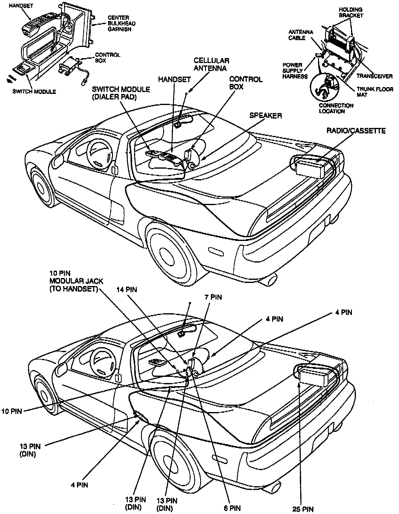

Operation CHARM
: Car repair manuals for everyone.
Home
>>
Acura
>>
1991
>>
NSX V6-3.0L DOHC
>>
Repair and Diagnosis
>>
Accessories and Optional Equipment
>>
Cellular Phone
>>
Technical Service Bulletins
>>
Cellular Phone Troubleshooting
>>
Component and Connector Locations
Component and Connector Locations
